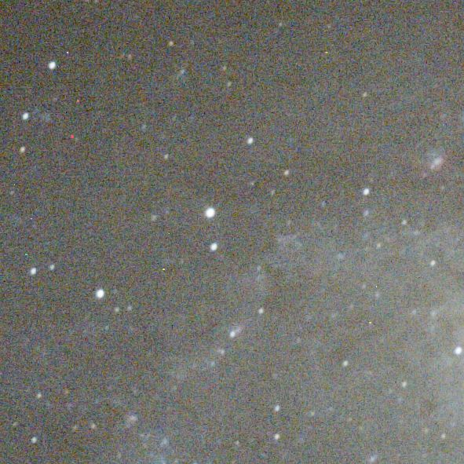
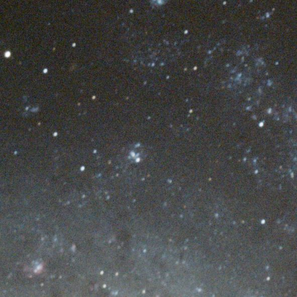
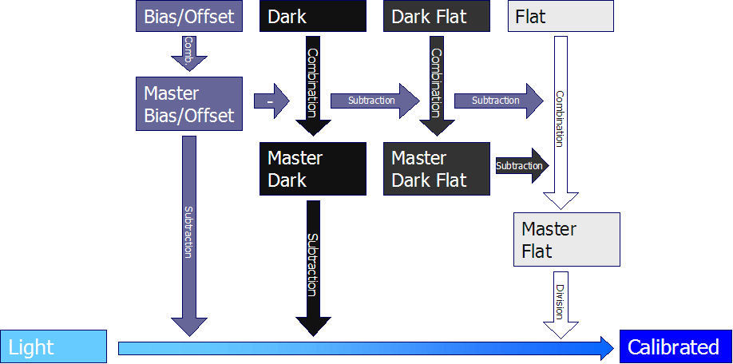
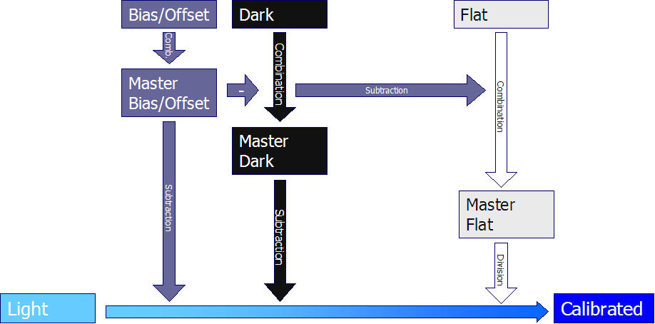
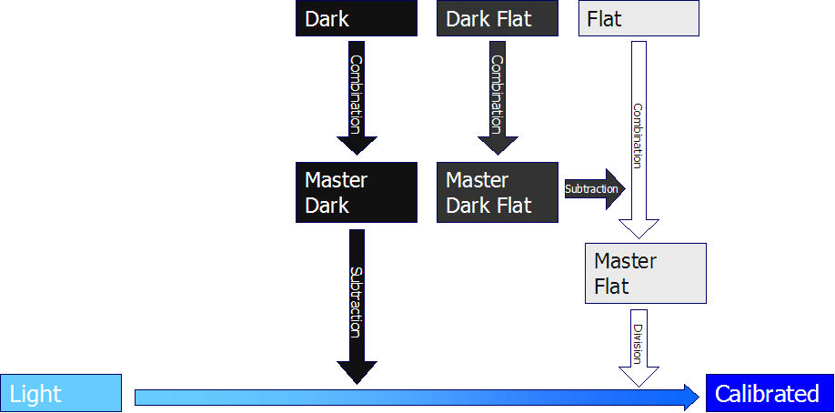

Conceito Teórico
Como criar imagens melhores
Porque integrar?
Quantas fotografias são necessárias?
Calibração: como usar as fotografias do tipo Dark, Bias/Offset e Flat
Qual a sensibilidadede ISO usar?
O Processo de Calibração
Abaixo você encontrará informações
importantes, mas de qualquer forma nada vai substituir a experiência pessoal.
Alguns especialistas decidiram criar sites e/ou revistas dedicados a astrofotografia
e que estão cheias de preciosismos, e em muitos casos de conhecimentos muito avançados.
Alguns dos tópicos são compreensíveis como sejam o ruído nas imagens, Drizzle, Guiagem, etc...
Nota: não estou a escrever estes tópicos para nenhuma publicação
que voce possa a encontrar.
Estou apenas apresentando este meu programa que é bom, gratuito e muito
completo em informação útil.
Porque Integrar?
A resposta é simples: para aumentar a razão Sinal/Ruído (SNR) na imagem astronômica final.
A imagem final resultante é mais luminosa? Não.
O resultado da imagem final é mais colorida? Não.
O segredo está em integrar muitas fotografias numa única fotografia para aumentar o nível da informação ou razão Sinal/Ruído (SNR).
o resultado não será nem mais luminoso nem mais colorido mas contém
menos ruido o que permitira intensificar o histograma para melhorar a definição,
evidenciando os pequenos detalhes e as cores RGB.
|
O exemplo do lado direito
mostra o resultado de uma integração de 1, 2, 4, 16 e 32 fotografias. Como se pode ver a fotografia resultante não mostra aumento da luminosidade ou aumento da coloração quando se incrementa o número de imagens astronomicas integradas do objeto astronômico, o que aumenta SIM é a suavidade, a imagem fica mais enevoada.
|
 |
Quantas fotografias são necessárias?
Quanto mais melhor, mas acima de um certo valor será menos eficiente.
A razão de Sinal/Ruído aumenta com a raiz quadrada
do número de fotografias integradas, independente do tempo de exposição de cada fotografia.
Isto é verdadeiro para todos os métodos de integração (seja o método de média, mediana, Kappa-Sigma
, média ponderal auto adaptiva , ...) exceto o do método da média ponderal da entropia uma vez que emprega a proporção da entropia de cada pixel
e assim incrementando o sinal de ruído que é a grande fonte da entropia..
Isto significa que tendo uma base SNR de 1, quando integramos 10 fotografias o SNR aumenta para 3.16 (raiz quadrada de 10). Para 30 imagens temos SNR de 5.47, para 50 imagens temos SNR de 7.07, para 100 imagens temos SNR de 10 e para 300 imagens temos SNR de 17.32.
Como você pode ver, para elevar o ganho de SNR para 7 são necessárias 50 fotografias (isto é de 1 a 50), no entanto para ter o mesmo ganho de SNR da ordem de 7 a partir de 100 fotografias, são necessárias mais 200 fotografias (isto é de 100 para 300).
Os conjuntos de 100 fotografias x 1 minuto de exposição e
10 fotografias x 10 minutos oferecem o mesmo resultado?
Teoricamente Sim, tomando em consideração apenas o SNR, mas na prática definitivamente NÃO, face ao resultado final, considerando o tempo de exposição.
A diferença entre 10 minutos de exposicao e 1 minuto de exposição está em que o
SNR em 10 minutos de exposição é maior que o 3.16 relativamente a 1 minuto de exposição.
Será obtido o mesmo SNR se integrarmos 10 fotografias de 10 minutes ou 100 fotografias de 1 minuto. No entanto, o sinal capturado pelo chip será diferente (a parte interessante). De forma simples, você só vai obter sinal se o tempo de exposição for suficientemente longo para capturar os fótons do objeto astronômico na mesma posição na maioria de suas imagens, de forma que esse sinal (fótons) não sejam considerados como ruído.
Por exemplo, no caso de uma nebulosa longínqua e fraca, você pode capturar
fótons em cada 10 minutos. Se usar 10 minutos de exposição, terá capturado
fótons para cada uma das fotografias que quando integradas resultará no sinal ampliado.
Se estiver usando apenas 1 minuto de exposição para a captura dos fótons, em apenas algumas
fotografias esse sinal estará presente, quando integradas será considerado como ruído, visto esse sinal não estar presente em todas as fotografias do objeto astronômico.
Posso integrar duas ou mais fotografias finais?
Afirmativo, a regra do quadrado aplica-se também para pequenas integrações.
Quando integramos duas fotografias o SNR aumenta pra 1.414 (raiz quadrada de 2).
Se as duas fotografias tiverem o mesmo SNR, então é o mesmo que ter uma simples integração.
Isto não quer dizer que essa integração resulta na mesma imagem final, apenas que o
SNR se manteve o mesmo.
No entanto, se uma integração contiver mais fotografias que a outra, o SNR final das
duas integrações será diferente e o SNR será mais baixo do que uma simples integração contendo todas as fotografias.
Assim ao combinar o resultado de integração de um conjunto de fotografias de 10 X 1 minuto com uma simples fotografia de 1 minuto,
a relação Sinal/Ruído - SNR resultante vai ser aproximadamente a mesma obtida pela combinação de 2 fotografias.
Isso é devido ao fato de que quando combinamos (integramos) duas imagens o ruído é aditivo e a melhor imagem é danificada pela pior imagem no processo.
Calibração:
como usar as fotografias de ruido térmico - Dark, artefatos - Bias/Offset e campo pleno iluminado - Flat
A calibração é um processo de tratamento das imagens astronômicas (Light Frames) em que consiste
na subtração dos artefatos via as imagens de Bias/Offset e o sinal de ruído térmico via Darks, dividindo pela imagem Flat (para corrigir os defeitos do sistema ótico).
Não explicarei aqui como se faz as fotografias de Dark, Bias/Offset e Flat ( veja
aqui) mas ensinar como
fazer uso delas para obter as melhores imagens possíveis.
Uma boa idéia
Todos dizem que temos que tirar fotografias tipo Dark, Bias/Offsets e Flats para criar
boas imagens, mas se o fizermos da forma errada, facilmente essas imagens de calibração irão danificar
as boas fotografias dos objetos astronômicos e você terminará obtendo resultado final muito desapontador.
A boa novidade e que e fácil obter
bons resultados. Aqui se encontram as respostas de porquê e as formas de como fazer.
Os equívocos mais comuns
Um equívoco comum é pensar que o número de fotografias tipo Dark, Bias/Offset e Flat
está relacionada com o número de fotografias do objeto astronômico (Light Frames).
Muitos usam poucas (algumas vezes somente uma) fotografias tipo Dark, Bias/Offset e Flat
enquanto poderiam obter resultados muito melhores usando um grande número das imagens de Dark,
Bias/Offset e Flat com o mesmo número de fotografias do objeto astronômico (Light Frames).
Seguindo a regra da raiz quadrada para o número de imagens você vai obter dos "masters" mais limpos e perfeitos, usando
um grande numero dessas fotografias. Lembre-se que com o Dark está buscando eliminar o ruído térmico
e via a Bias/Offset os artefatos do chip, e não ao ruído inerente do processo de captura de fótons nas fotografias.
Por exemplo: quando se subtrai o Master Dark de cada fotografia também está se adicionando o ruído existente na Master Dark
à fotografia em causa. Quanto menor o ruído da imagem Master dark, menor o ruído você estará adicionando à Light Frame.
Isto também é verdadeiro para os Masters de Bias/Offset e Flat.
De fato, por usar apenas um número muito pequeno de imagens para a criação dos Masters, você está facilmente triplicando o ruído
das imagens astronomômicas (Light Frames) calibradas (após subtração das imagens de Bias/Offset), comparado ao ruído existente nas
Light Frames antes da calibração.
Será necessário 9 vezes mais (3 x 3) imagens astronômicas para trazer o nível do ruído para os mesmo valores, caso estivesse empregando "Masters" com livres de nível de ruído.
|
O exemplo da imagem do lado direito mostra
o resultado da integração de (passe com o mouse por cima da imagem) |
 |
esta é a razão pela qual você deve usar o maior
número possível de Darks/ Bias/Offsets /Flats. Na prática 20 fotografias é o valor mínimo se não quiser adicionar muito ruído,
mas ficará muito melhor, com 50 a 100 fotografias que integradas resultarão em "Masters" (quase) sem ruídos.
Nota sobre os Pixels Quentes
Pixels quentes, são aqueles pixels que tiveram um comportamento anormal em relação aos pixels da imagem. Possuem um sinal muito
forte de tal maneira que conseguem ser sobressair e serem visiveis em cada uma das fotografias astronômicas e Darks.
Naturalmente, quando se subtrai uma imagem Dark de uma fotografia astronômica você estará removendo os pixels quentes
o que pode dar a falsa impressão que a imagem Dark cumpriu o seu trabalho ... mas
não é bem assim.
Ao mesmo tempo que se subtrai os pixels quentes / ruído térmico, adiciona e duplica o ruído da imagem resultante (calibrada),
arruinando-a totalmente.
Que sensibilidade ISO usar?
Uma pergunta bastante frequente e a resposta
é simples: não tem importância...escolha você.
De fato a sensibilidade ISO é apenas um ajuste de qualquer câmera DSLR, mas uma vez que o chip detector é o mesmo
(você não altera o chip quando muda o ajuste de sensibilidade ISO, não é mesmo?) os resultados são os mesmos.
Não é porquê você esta usando um valor de sensibilidade ISO mais elevada que você adquire mais fótons,
é apenas o sinal eletrônico que está sendo amplificado (com ruído e tudo mais).
A boa novidade é que você não necessita
alterar a sensibilidade ISO para capturar objetos de céu profundo,longinquos e esmaecidos.
Necessita apenas fazer fotografias do objeto astronômico com
longas exposições.
Naturalmente isto é um pouco mais complicado, uma vez que existe uma boa sensibilidade ISO para cada modelo de câmera DSLR.
Depende das características de cada chip detector (cuja eletrônica determina o nível de ruído de leitura e ruído térmico)
e isso não é tão simples de calcular ou obter.
Christian Buil determinou alguns bons valores para algumas câmeras DSLR da Canon:
| DSLR | Recomendado (Ótimo) Sensibilidade ISO |
| Canon EOS 10D | 400 (290) |
| Canon EOS 20D | 1000 (1000) |
| Canon EOS 350D | 800 (900) |
| Canon EOS 5D | 1000 (1100) |
O Processo de Calibração
O processo de calibração é como cada um dos conjuntos de arquivos (fotografias
de imagens tipo, Darks, Bias/Offsets, Flats,...) são utilizados, frequentemente é percebido como um mistério,
mas que na realidade é um processo bastante simples.
Abaixo é apresentado um gráfico que mostra o processo de calibração total, quando todos os arquivos estão disponíveis :
O Processo de Calibração total (todos
os arquivos disponíveis)

No entanto é comum e perfeitamente possível, não usar arquivos de calibração tipo Dark Flat. O gráfico do processo de calibração nesse caso segue abaixo :
Processo de calibração alternativo
I (sem uso de Dark Flat Frames)

Por outro lado, se estás usando Dark Flat Frames é possível fazer a calibração sem o Bias/Offset. Veja o gráfico em baixo:
Processo de calibração alternativo
II (sem o Bias/Offset Frames)

Qualquer outra combinação de imagens para fazer a calibração é considerado inadequada. Só existem estas 3 possibilidades.